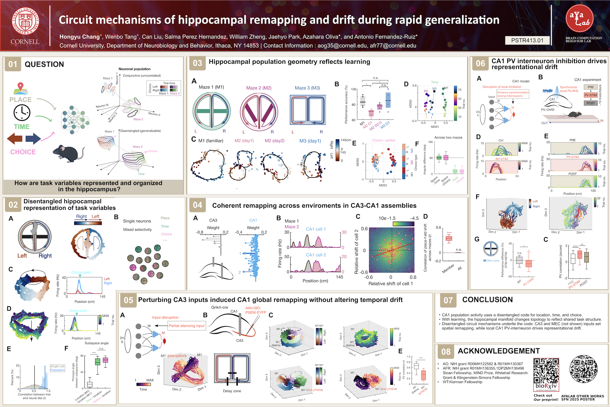

Circuit mechanisms for disentangled representations and generalization in the hippocampus
Scientific question
How does the hippocampus transform heterogeneous and dynamically changing single-neuron activity into coherent population representations that distinguish individual experiences while generalizing shared knowledge across them? This study asks whether spatial location, elapsed time and behavioral choice are organized along separable population dimensions, how this organization emerges through learning, and which circuit mechanisms govern spatial remapping and temporal representational drift.
Abstract
Understanding how the heterogeneous activity patterns of individual neurons give rise to coherent population dynamics and cognition is a central challenge in neuroscience. In the hippocampus, neurons are tuned to spatial location, yet their activity is also modulated by multiple external and internal variables and appears to drift randomly over time, making it difficult to link hippocampal computations to behavior. By analyzing hippocampal population dynamics in behaving mice, we reveal a structured organization underlying the diversity of single-neuron responses—the hippocampus encodes different aspects of experience as disentangled variables represented in the co-activity dynamics of cell assemblies. The temporal and contextual components of these representations are governed by local inhibitory interactions and input-driven cell–assembly dynamics, respectively. Our findings reveal the circuit basis of disentangled hippocampal representations, offering a unifying geometric principle of population coding that supports flexible memory representations and enables rapid generalization of prior knowledge to new situations.
Presentation
